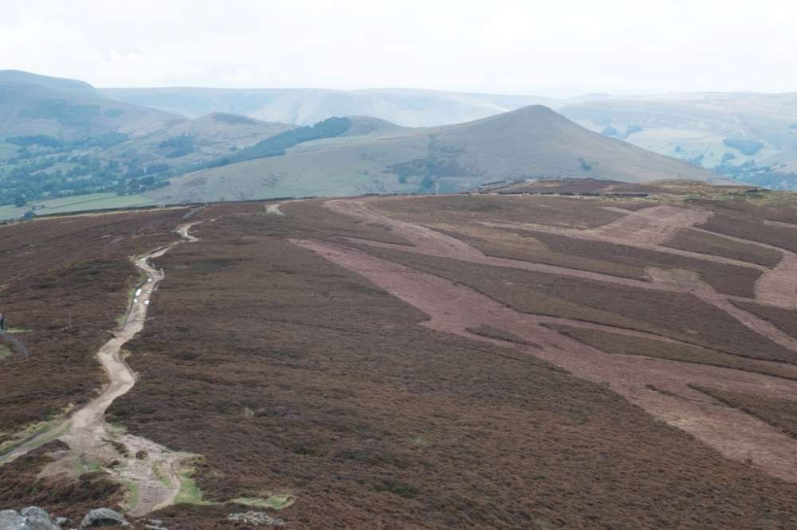

The Man made Peak
… the conservation movement, while well intentioned, has sought to freeze living systems in time. It attempts to prevent animals and plants from either leaving or–if they do not live there already–entering. It seeks to manage nature as if tending a garden. Many of the ecosystems, such as heath and moorland, blanket bog and rough grass, that it tries to preserve are dominated by the low, scrubby vegetation which remains after forests have been repeatedly cleared and burnt. This vegetation is cherished by wildlife groups, which prevent it from reverting to woodland through intensive grazing by sheep, cattle and horses. It is as if conservationists in the Amazon had decided to protect the cattle ranches, rather than the rainforest. (Monbiot, 2014, p. 8)
Management of moorland through cutting.

Out of 218 nations, the UK ranks 189th for the intactness of its living systems (rspb, 2016)
… In Britain, as in most of Western Europe, land is managed; it follows that vistas or landscapes are constructed, which means that a sense of aesthetic principles, as well as social mores, are in play. (Wells, 2011, p. 28)
Bibliography
Monbiot, G. (2014) Feral: Rewilding the Land, the Sea, and Human Life. University of Chicago Press.
rspb (2016) State of Nature 2016, https://www.rspb.org.uk/. Available at: https://www.rspb.org.uk/globalassets/downloads/documents/conservation-projects/state-of-nature/state-of-nature-uk-report-2016.pdf (Accessed: 15 November 2019).
Wells, L. (2011) Land Matters: Landscape Photography, Culture and Identity. I.B.Tauris.
Date
15/11/2019